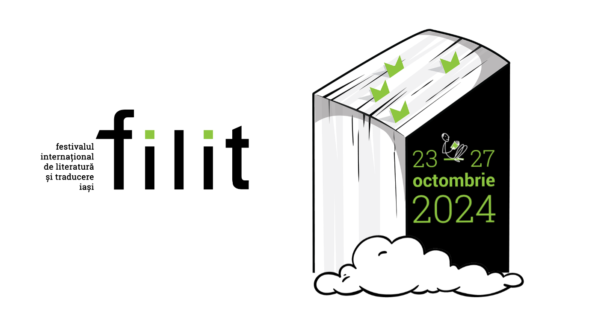

filit 2024
23 - 27 octombrie 2024
Ce este filit?
Festivalul Internațional de Literatură și Traducere Iași (FILIT) este un proiect cultural de amploare, care aduce împreună în România sute de profesioniști din diverse domenii culturale: scriitori, traducători, editori, organizatori de festivaluri, critici literari, librari, distribuitori de carte, manageri culturali și jurnaliști.
Pe parcursul a cinci zile, FILIT găzduiește numeroase evenimente diverse, precum întâlniri literare cu figuri marcante ale literaturii internaționale, nopți albe dedicate poeziei și muzicii, ateliere și mese rotunde pentru profesioniști, concerte, lecturi și alte activități culturale.
Expoziții | 23-27 octombrie 2024
Casa FILIT (Piața Unirii) | 10:00-20:00
"Literatură de bandă"
Expoziție de benzi desenate de Bogdan Chelariu
Muzeul „Nicolae Gane” – Galeria Artei Ieșene | 10:00-17:00
"Je vous souhaite d'être follement aimée sau viața începută
precum pantoful stâlcit cu care vorbesc în mine"
Instalație de Leontin Păun
Muzeul „Vasile Pogor” – Casa Junimii | 10:00-17:00
Sala Istoria locului și archeologie (II): „La ceas de
taină”
Expoziție dedicată scriitorilor Constantin Negruzzi (1808-1868) și
Iacob Negruzzi (1842-1932)
Curator: Lăcrămioara Agrigoroaiei
Sala Studio J: ,,Suprapuneri"
Expoziție de Ioniță Benea
Muzeul „Sf. Ierarh Dosoftei – Mitropolitul” | 10:00-17:00
"Când arta se transformă în carte și cartea în artă" de Ioana
Aida Furnică (Spania)
Proiect realizat în cadrul primei ediții a Rezidențelor „No
Frontier”, 2024 – inițiativă a Muzeului Național al Literaturii
Române Iași
Partener: Asociația „Patrimoniu pentru
comunitate” Iași
Curator: Dora Cană
Muzeul „Mihai Eminescu” – Colecția „Istoria teatrului românesc” | 10:00-17:00
"Capcanele traducerilor"
Expoziție organizată în parteneriat cu Arhivele Naționale Iași și
Biblioteca Centrală Universitară „Mihai Eminescu” Iași
Curator: Laura Terente
Casa Muzeelor | 10:00-17:00
Expoziții temporare (parter): „Voices of War”
Instalație audio imersivă de Cosmin Perța și Denys Vasylyev
Curator: Ana Negoiță
Foaier (parter): „Cu grimonul pe oglindă”
Expoziție dedicată artistei Anny Braesky (1902-1984)
Parteneri: Asociația „Patrimoniu pentru comunitate” Iași,
Teatrul Național Iași, Radio România Iași
Muzeul Copilăriei în Comunism: „Experimentul Zaica la la
Petrila”
Expoziție de Ion Barbu
Evenimente Săptămâna Aceasta

Eveniment 1
Scurtă descriere
Eveniment 2
Scurtă descriere
Eveniment 3
Scurtă descriere
Eveniment 4
Scurtă descriere